此篇將會介紹如何使用 Line 的網頁去建立一個 LineBot 聊天機器人。不需撰寫任何程式或架設伺服器，只需要動動小手點擊網頁，把屬於你的 LineBot 設定好，就可以跟你做簡單的對話囉！
開始吧！
建立 Line developer 帳號
請先開啟 Line developer 網頁
https://developers.line.me/en/
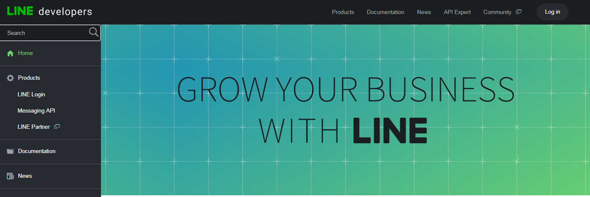
接著按右上角的 Log in，登入你的 Line 帳號
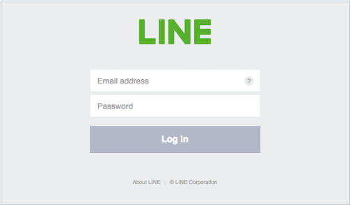
註冊 Developer 帳號
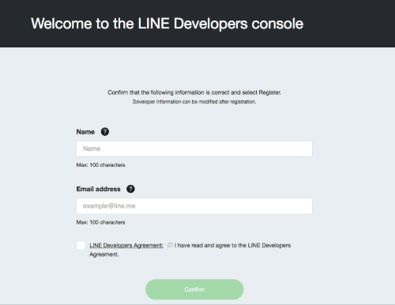
註冊完就成為 Line 的開發者囉！
建立一個 provider
按下 Create provider 或是 Add new provider，來建立的頁面
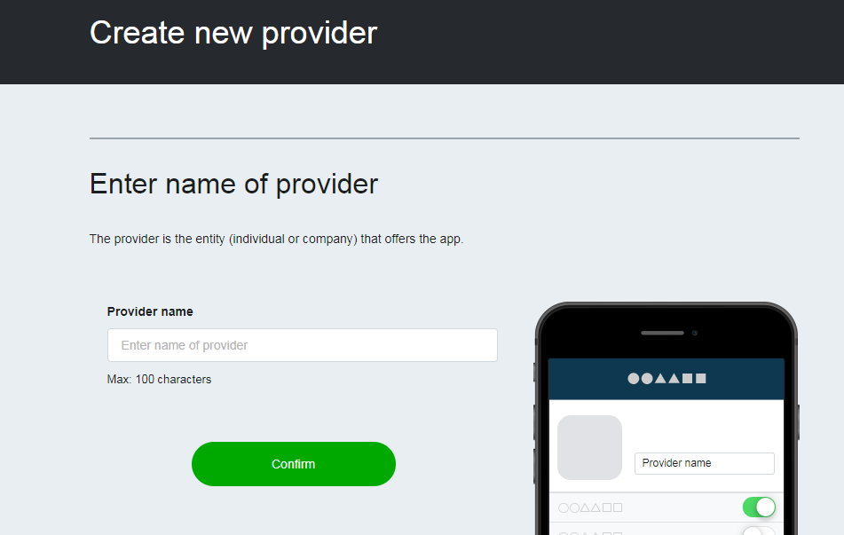
輸入你的 provider name 之後按下 Confirm
這邊的 provider name 不是 LineBot 的名字，而是這個 LineBot 的提供者名稱
例如：IanChiu28 開發了一個聊天機器人-小嘴鳥，那這邊的 provider name 就要填 IanChiu28，然後我們的機器人叫做小嘴鳥唷！
建立一個 Messaging API
現在你的畫面應該像這個樣子
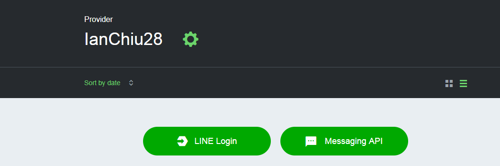
按下右邊的 Messaging API 吧！這就是建立一個機器人的身份囉！
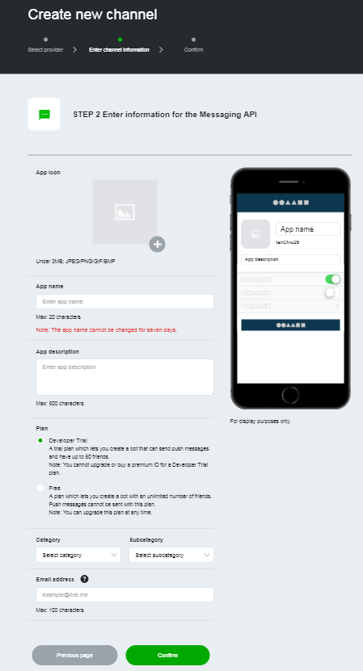
接著我們一步步說明這頁要怎麼填
- App icon：聊天機器人的大頭照
- App name：聊天機器人的名字
- App description：聊天機器人的簡介
- Plan：選擇 Developer Trail
Developer Trail 才可以用加值功能，雖然朋友數有限制，但是只是玩具少點人用也沒關係啦！
- Category：隨便選一個
- Subcategory：隨便選一個
- Email address：填入你的信箱
完成後大概會像這樣
我怕圖片會有版權問題，小畫家隨便畫一個啦～
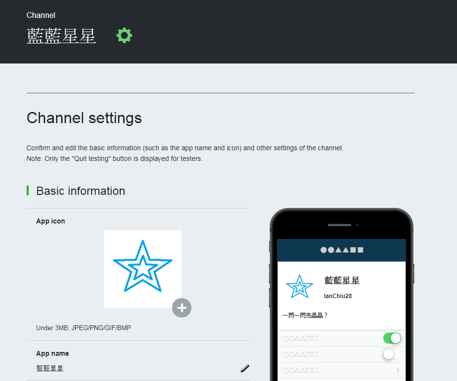
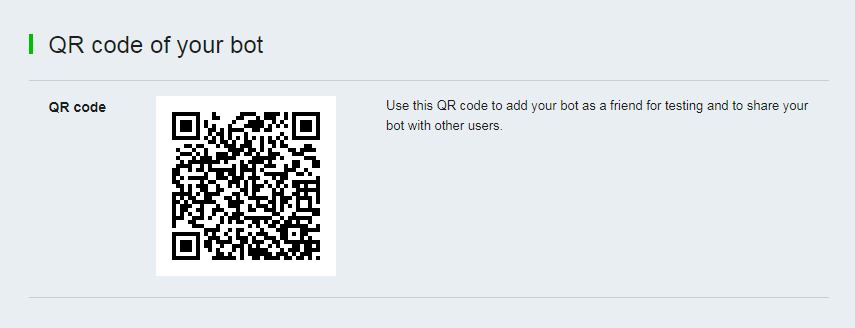
最後的地方有一個 QR Code 可以讓你用手機加入好友，馬上來掃掃看吧！
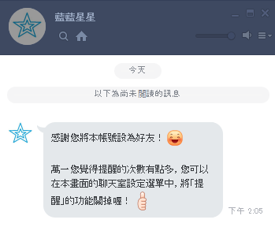
馬上跟他聊天看看吧！
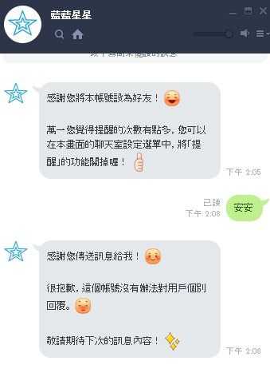
到這邊為止你已經建立你的聊天機器人囉！
使用 Line 的後台網頁修改機器人的回話內容
我們先回到 Line developer 的網頁，進到你剛剛建立的聊天機器人的設定頁面
我們看到最下面 QR Code 的上面一點點的地方，有一個回覆訊息的區塊
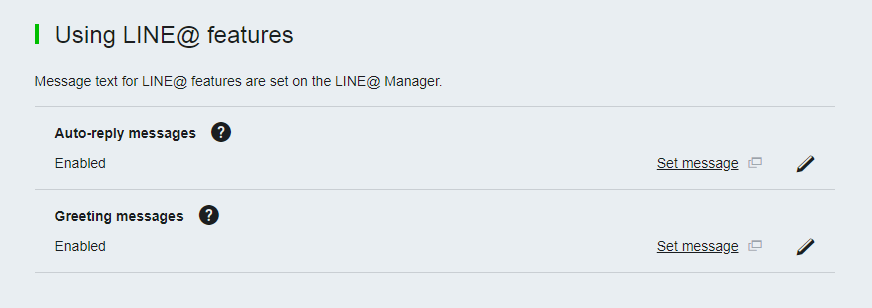
點一下 Set message，會到 Line manager 的頁面
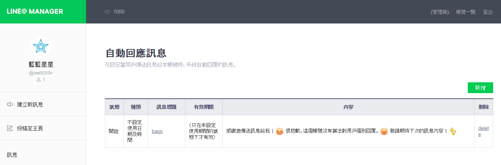
在這個頁面就可以設定回覆的訊息囉！我們通常會用到的地方是訊息那一個區塊
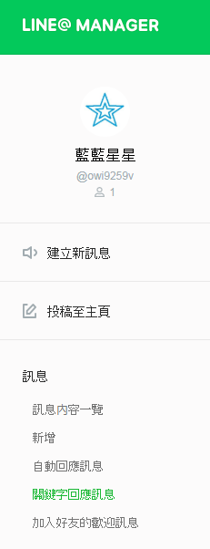
接著我們來試試看關鍵字回應訊息
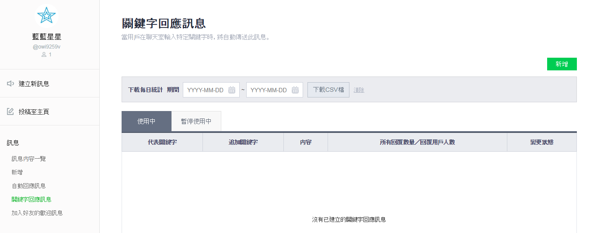
按下右上角的新增
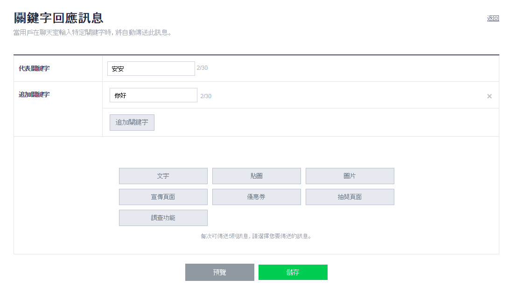
在代表關鍵字的地方打上你想要的關鍵字，如果關鍵字有可能多個，可以追加關鍵字
然後在下方的回覆區塊，可以選擇你想要的回覆方式
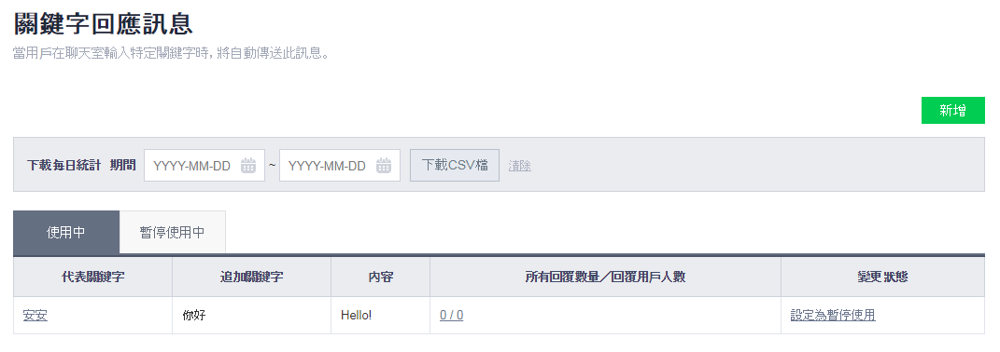
設定完成，接著趕緊來試試看吧！
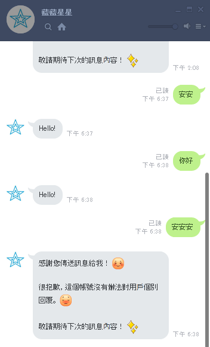
可以看到我們打了關鍵字的話，機器人就會回應你剛剛設定的回覆唷～
需要注意的是，關鍵字必需要完全符合才可以，向最後一句「安安安」只有部分符合是不會有效果的
結語
OK～ 我們完成了最基本的聊天機器人囉！
完全不需要寫任何的程式，只是在網頁上做一些設定，就可以有一個屬於自己的機器人了。但是想跟朋友講垃圾話的話，關鍵字似乎不太符合我們的需求啊！在平常聊天時要完全符合關鍵字實在是太困難了，所以下一篇將會透過程式的方式做到部分符合的關鍵字回覆功能。有興趣的話，請繼續前往下一篇唷～